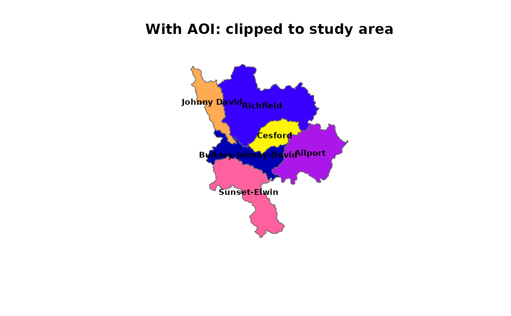
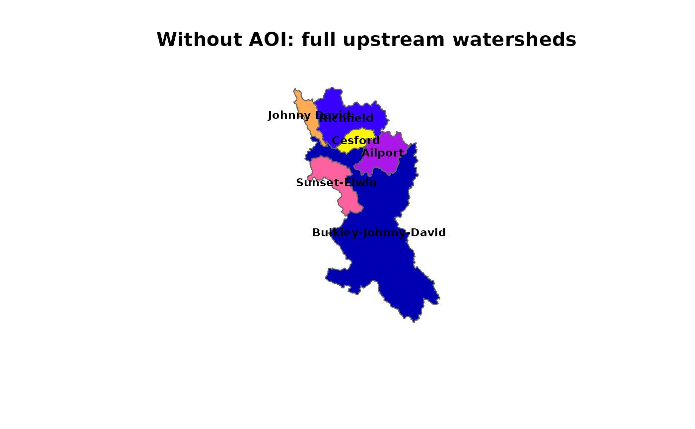

Split a Watershed into Sub-Basins at Break Points
Source:R/frs_watershed_split.R
frs_watershed_split.RdSnaps break points to the nearest stream, delineates a watershed at each, and performs pairwise subtraction to produce non-overlapping sub-basin polygons. The most downstream (largest) watershed is first; each subsequent sub-basin is the difference between its full watershed and all smaller (upstream) watersheds.
Arguments
- conn
A DBI::DBIConnection object (from
frs_db_conn()).- points
A data frame (or sf) with
lonandlatcolumns (WGS84). All extra columns (e.g.name_basin) are preserved in the output, making this the place to attach labels, site IDs, or any metadata to the resulting sub-basins.- aoi
An
sforsfcpolygon to clip results to. Optional. When provided, sub-basins are clipped to the AOI boundary. Include the AOI's downstream point as a break point to get complete tiling with no gaps (see Examples).- tolerance
Numeric. Maximum snap distance in metres. Default
5000.- crs
Target CRS for the output (integer EPSG code, character, or
sf::st_crs()object). DefaultNULLreturns WGS84 (EPSG:4326).
Value
An sf data frame with columns: blk, drm, gnis_name,
area_km2, any extra columns from the input, and geometry.
Rows are ordered largest (most downstream) to smallest (most upstream).
Details
Stable identifiers come from blk (blue line key) and drm (downstream
route measure) — these never change regardless of how many points are in the
set. Extra columns from the input are preserved in the output.
Watersheds are sorted by area (descending), and each has all smaller intersecting watersheds subtracted. This produces non-overlapping sub-basin polygons that tile the study area.
Points that fail to snap (no stream within tolerance) are dropped with a
message. If all points fail, an error is raised.
See also
Other watershed:
frs_watershed_at_measure()
Examples
# Load cached data (Byman-Ailport subbasin, Neexdzii Kwa / Upper Bulkley)
d <- readRDS(system.file("extdata", "byman_ailport.rds", package = "fresh"))
# With AOI: sub-basins clipped to study area boundary
subbasins <- readRDS(system.file("extdata", "byman_ailport_subbasins.rds",
package = "fresh"))
cols <- sf::sf.colors(nrow(subbasins))
plot(sf::st_geometry(subbasins), col = cols, border = "grey40",
main = "With AOI: clipped to study area")
plot(sf::st_geometry(d$aoi), border = "red", lwd = 2, add = TRUE)
text(sf::st_coordinates(sf::st_centroid(subbasins)),
labels = subbasins$name_basin, cex = 0.7, font = 2)
#> Warning: st_centroid assumes attributes are constant over geometries

# Without AOI: full upstream watersheds, pairwise subtracted
subbasins_no_aoi <- readRDS(system.file("extdata",
"byman_ailport_subbasins_no_aoi.rds", package = "fresh"))
cols2 <- sf::sf.colors(nrow(subbasins_no_aoi))
plot(sf::st_geometry(subbasins_no_aoi), col = cols2, border = "grey40",
main = "Without AOI: full upstream watersheds")
text(sf::st_coordinates(sf::st_centroid(subbasins_no_aoi)),
labels = subbasins_no_aoi$name_basin, cex = 0.7, font = 2)
#> Warning: st_centroid assumes attributes are constant over geometries

if (FALSE) { # \dontrun{
conn <- frs_db_conn()
pts <- read.csv(system.file("extdata", "break_points.csv", package = "fresh"))
# Without AOI — full upstream watersheds, pairwise subtracted
subbasins <- frs_watershed_split(conn, pts)
# With AOI — clipped to study area. Include the downstream boundary
# point in break_points.csv for complete tiling with no gaps.
aoi <- frs_watershed_at_measure(conn, 360873822, 208877,
upstream_measure = 233564)
subbasins <- frs_watershed_split(conn, pts, aoi = aoi)
DBI::dbDisconnect(conn)
} # }